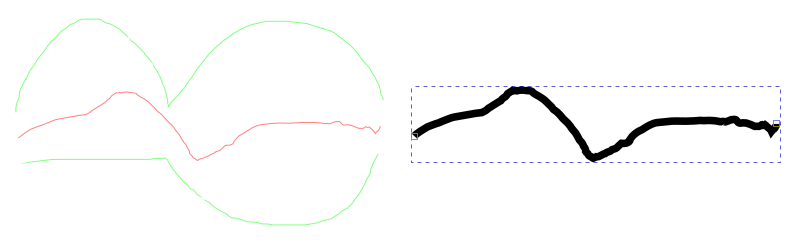

铅笔工具
快捷键：P 或者 F6
铅笔工具( )也叫自由手绘工具，可以用来绘制路径。其操作方法与直接使用铅笔在纸上画画非常类似，按下鼠标并在画布上按需要移动鼠标即可；松开鼠标后，鼠标移动过的轨迹就是画好的路径。
{kind=link}
操作方法
在画布上点击鼠标不松手，然后按需要移动鼠标；
鼠标经过的轨迹会显示绿色；
轨迹合适后，松开鼠标；
路径绘制完成。
按空格键可以临时切换到选择工具(
)，再按空格键则切换回铅笔工具。
刚画好的路径，如果是开放路径，其两端会各显示一个小正方形，它是开放路径的端点。
对于已经画好的开放路径，如果从其端点处点击(端点颜色会发生变化)开始继续绘制，表示从原路径上继续延伸绘制，而非创建另一条路径。
可以使用菜单【路径⇨简化】命令对生成的路径做平滑处理。(Ctrl+L)
(简化命令会减少节点数量)
Esc或者Ctrl+Z可以删除当前未完成的路径。
{kind=link}
辅助快捷键
按Ctrl不松手，然后在画布上单击一次鼠标，可以画一个单独的小圆点。
(上面方法创建的圆点，其尺寸可以在菜单【编辑⇨首选项⇨工具⇨铅笔】中设置，默认直径为描边尺寸的三倍 )
如果同时按住Ctrl+Shift不松手，画出的圆点，直径比上面的方法大一倍。
如果同时按住Ctrl+Alt不松手，每一次单击鼠标会画一个随机大小的圆点，但尺寸相对较小。
如果同时按住Ctrl+Shift+Alt不松手，每一次单击鼠标会画一个随机大小的圆点，但尺寸相对较大。
如果绘制时按Alt不松手，会进入草稿模式；此模式下，在Alt键松开之前，所有绘制的路径(绿色)会被平均，然后根据平均值(红色)来创建路径，如下图所示：
 草稿示例：左侧中间红色是平均路径，右侧是松开Alt后创建的路径
绘制路径时如果按住Shift键，会暂时禁用吸附功能。
在已有路径处于选中的状态下，如果绘制新路径时按住Shift键，会合并新路径与被选中路径。(子路径)
工具选项
( )：压力开关：如果使用绘图板之类的压力敏感设备，可以在这里对压感设备的参数进行调整：
最小：压力最小值(%)
最大：压力最大值(%)
线端：路径两端的形状
平滑：平滑度
( 平滑度 )：路径的平滑程度，范围从1到100，数值越大越平滑。

平滑度差异对比：2号、3号、4号都是按 1号的样子绘制，但平滑度不同。2号、3号、4号的平滑度分别为 5、25、50 。 4号与 1号相比已经变形，所以平滑度并非越大越好。
( )：LPE平滑锁定：点击此按钮后，上面的LPE平滑开关失效，路径的平滑度无法继续通过 平滑度 数值调整。(此选项为单向操作，锁定后无法再解锁)
( Shape )：此选项与钢笔工具相同，请参考 钢笔工具选项：Shape
( 缩放 )：此选项与钢笔工具相同，请参考 钢笔工具选项：缩放
{kind=link}
{kind=link}
{kind=link}
{kind=link}
{kind=link}